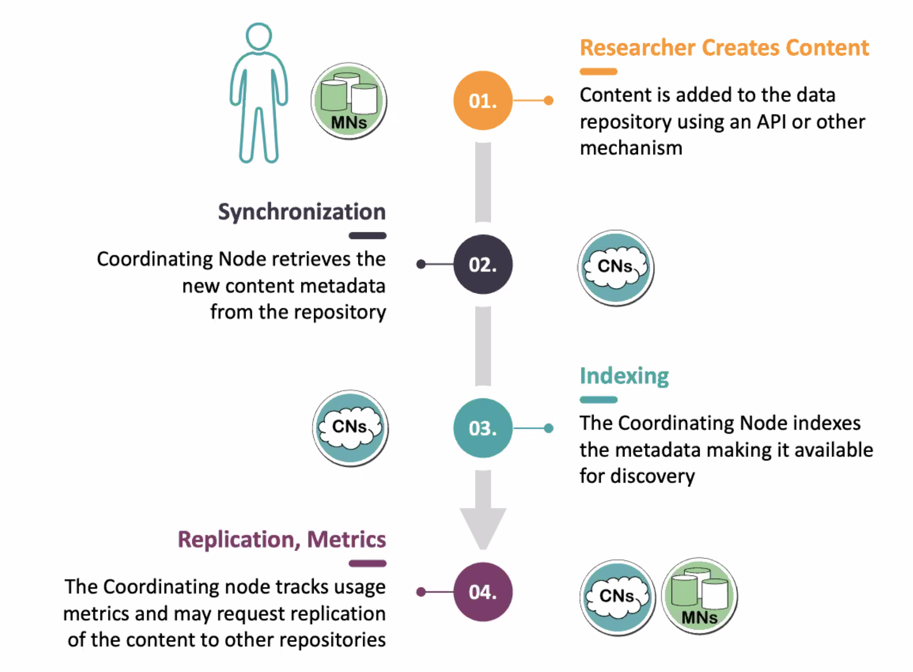

options(dataone_test_token = "...")Creating a data package
This chapter will teach you how to create and submit a data package to a DataONE MN via R. But first, please read this paper on the value of structured metadata, namely the Ecological Metadata Language (EML).
What is in a package?
A data package generally consists of at least 3 components.
Metadata: One object is the metadata file itself. In case you are unfamiliar with metadata, metadata are information that describe data (e.g. who made the data, how were the data made, etc.). The metadata file will be in an XML format, and have the extension
.xml(extensible markup language). We often refer to this file as the EML, which is the metadata standard that it uses. This is also what you see when you click on a page in the Arctic Data Center.Data: Other objects in a package are the data files themselves. Most commonly these are data tables (
.csv), but they can also be audio files, NetCDF files, plain text files, PDF documents, image files, etc.Resource Map: The final object is the resource map. This object is a plain text file with the extension
.rdf(Resource Description Framework) that defines the relationships between all of the other objects in the data package. It says things like “this metadata file describes this data file,” and is critical to making a data package render correctly on the website with the metadata file and all of the data files together in the correct place. Fortunately, we rarely, if ever, have to actually look at the contents of resource maps; they are generated for us using tools in R.

Packages on the Website
All of the package information is represented when you go to the landing page for a dataset. When you make changes through R those published changes will be reflected here. Although you can edit the metadata directly from the webpage but we recommend to use R in most cases.

About identifiers
Each object (metadata files, data files, resource maps) on the ADC or the KNB (another repo) has a unique identifier, also sometimes called a “PID” (persistent identifier). When you look at the landing page for a dataset, for example here, you can find the resource map identifier listed under the title in the gray bar after the words “Files in this dataset Package:” (resource_map_doi:10.18739/A2836Z), the metadata identifier in the “General > Identifier” section of the metadata record or after the title with blue font (doi:10.18739/A2836Z), and the data identifier by clicking the “more info” link next to the data object, and looking at the “Online Distribution Info” section (arctic-data.9546.1).
Note, all datasets submitted are given a preliminary identifier (usually starting with urn:uuid:). When the dataset is finalized, a doi will be issued.

Different versions of a package are linked together by what we call the “version chain” or “obsolescence chain”. Making an update to a data package, such as replacing a data file, changing a metadata record, etc, will result in a new identifier for the new version of the updated object. When making changes to a package, always use datapack::uploadDataPackage() for updating the entire package on the latest versions of all objects to ensure that the version chain is maintained.
Upload a package
We will be using R to connect to the NSF Arctic Data Center (ADC) data repository to push and pull edits in actual datasets. To identify yourself as an admin you will need to pass a ‘token’ into R. Do this by signing in to the ADC with your ORCid and password, then hovering over your name in the top right corner and clicking on “My profile”, then navigating to “Settings” and “Authentication Token”, copying the “Token for DataONE R”, and finally pasting and running it in your R console.
Warning
This token is your identity on these sites, please treat it as you would a password (i.e. don’t paste into scripts that will be shared). The easiest way to do this is to always run the token in the console. There’s no need to keep it in your script since it’s temporary anyway.
You will need to retrieve a new one after it either expires or you quit your R session.
Sometimes you’ll see a placeholder in scripts to remind users to get their token, such as:
Note
Since we will be working on the test site and not the production site, please remember to get your token from test.arcticdata.io
Next, please be sure these packages are loaded for the training (these should already exist if you are working on the server):
library(devtools)
library(dataone)
library(datapack)
library(EML)
library(remotes)
library(XML)
library(uuid)If any package could not be loaded, use the following command (replacing package_name with the actual package name) to install the package, then load them.
install.packages("package_name")Now you’ll install the arcticdatautils and datamgmt packages with the code below. If prompted to update packages during the installation process, skip the updates. Now, run the following code to install and load the libraries.
remotes::install_github("nceas/arcticdatautils")
library(arcticdatautils)
remotes::install_github("nceas/datamgmt")
library(datamgmt)
Note
When you are usually working with data packages, you will only need the following:
library(dataone)
library(datapack)
library(EML)
library(arcticdatautils)For this training, we will be working exclusively on the Arctic test site, or “node.” In many of the functions you will use this will be the first argument. It is often referred to in documentation as mn, short for member node. More information on the other nodes can be found in the reference section under Set DataONE nodes Set DataONE nodes
For example, if we are using the test site, set the node to the test Arctic node:
d1c_test <- dataone::D1Client("STAGING", "urn:node:mnTestARCTIC")Once all set up you can first publish an object (data). If you are curious how everything magically works, here is a handy diagram:

datapack Background
adapted from the dataone and datapack vingettes
datapack is written differently than most R packages you may have encountered in the past. This is because it uses the S4 system instead.
library(dataone)
library(datapack)
library(uuid)Data packages
Data packages are a class that has slots for relations (provenance), objects(the metadata and data file(s)) and systemMetadata.
Data Objects
Check out the objects slot
dp@objectsGet the number for data and metadata files associated with this data package:
getSize(dp)Get the file names and corresponding pids
getValue(dp, name="sysmeta@fileName")Get identifiers
You can search by any of the sysmeta slots such as fileName and formatId and get the corresponding identifier(s):
metadataId <- selectMember(dp, name="sysmeta@ADD THE NAME OF THE SLOT",
value="PATTERN TO SEARCH BY")Example:
selectMember(dp, name="sysmeta@formatId", value="image/tiff")
selectMember(dp, name="sysmeta@fileName", value="filename.csv")Provenance
View the provenance as a dataTable. We will get into detail in the Building provenance chapter.
dp@relations$relationsExercise 2a
Select a dataset from the catalog on the Arctic Data Center. Observe the number of data files in the dataset. Try to find identifiers for the metadata file and resource map on the landing page for the dataset based on the screenshot shown above.
Create a new data package
adapted from the dataone and datapack vingettes
library(dataone)
library(datapack)
library(uuid)To create a new data package, follow the code below. Remember, a data package is a class that has slots for relations (provenance), objects(the metadata and data file(s)) and systemMetadata.
dp <- new("DataPackage")Upload new data files
Create and add a metadata file
In this example we will use this previously written EML metadata. Here we are getting the file path from the dataone package and saving that as the object emlFile.
This is a bit of an unusual way to reference a local file path, but all this does is looks within the R package dataone and grabs the path to a metadata document stored within that package. If you print the value of emlFile you’ll see it is just a file path, but it points to a special place on the server where that package is installed. Usually you will just reference EML paths that are stored within your user file system.
emlFile <- system.file("extdata/strix-pacific-northwest.xml",
package = "dataone")Create a new DataObject and add it to the package. In the case below, our new DataObject will be a metadata file.
metadataObj <- new("DataObject",
format = "https://eml.ecoinformatics.org/eml-2.2.0",
filename = emlFile)
dp <- addMember(dp, metadataObj)Check the dp object to see if the DataObject was added correctly.
dpAdd some additional data files
sourceData <- system.file("extdata/OwlNightj.csv", package = "dataone")
sourceObj <- new("DataObject", format = "text/csv", filename = sourceData)
dp <- addMember(dp, sourceObj, metadataObj)
Note
If you want to change the formatId please use updateSystemMetadata (more on this later in the book)
Upload the package
d1c <- dataone::D1Client("STAGING", "urn:node:mnTestARCTIC")Make sure to give access privileges to the ADC admins. Although you may be tempted to edit the format of the string in the subject argument, you must keep it exactly as is. Otherwise you’ll run into error messages!
myAccessRules <- data.frame(subject = "CN=arctic-data-admins,DC=dataone,DC=org",
permission = "changePermission") Get necessary token from test.arcticdata.io to upload the dataset prior uploading the datapackage:
packageId <- uploadDataPackage(d1c, dp, public = TRUE,
accessRules = myAccessRules, quiet = FALSE)
Note
If you want to preserve folder structures, you can use this method
In this example, adding the csv files to a folder named data and scripts:
outputData <- system.file("extdata/Strix-occidentalis-obs.csv", package="dataone")
outputObj <- new("DataObject", format = "text/csv", filename = outputData,
targetPath = "data")
dp <- addMember(dp, outputObj, metadataObj)
progFile <- system.file("extdata/filterObs.R", package = "dataone")
progObj <- new("DataObject", format = "application/R", filename = progFile,
targetPath = "scripts", mediaType = "text/x-rsrc")
dp <- addMember(dp, progObj, metadataObj)Exercise 2b
This exercise will take you through how to do the submission process through R instead of the webform (exercise 1).
Part 1 - Gather your data files
For our convenience, we will be grabbing the metadata and data files from the file we published earlier:
- Locate the data package you published in Exercise 1 by navigating to the “My Profile > My Data” section on test.arcticdata.io.
- Download the metadata and data files and transfer them to the Datateam server.
Part 2 - Working in R
Now we want to publish the metadata and data files we downloaded again to test.arcticdata.io
- Obtain a token and please note that for this exercise please make sure you grab the token from the arcticdata test site
- Publish your metadata and data file to the site.
#set the node
d1c_test <- dataone::D1Client("STAGING", "urn:node:mnTestARCTIC")
dp <- new("DataPackage")
#add your metadata
metadataObj <- new(...)
dp <- addMember(...)
#add your data files
sourceObj <- new(...)
dp <- addMember(...)
#upload your package
myAccessRules <- data.frame(...)
packageId <- uploadDataPackage(...)- View your new data set by appending the metadata PID to the end of the URL test.arcticdata.io/#view/…
- If you are successful it should look the same as the dataset you created in exercise 1